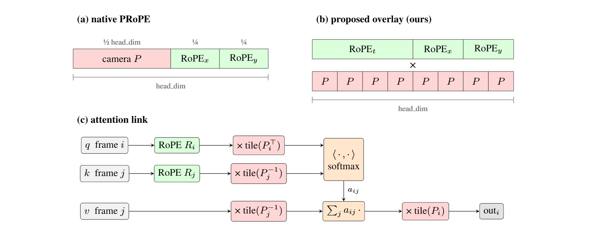
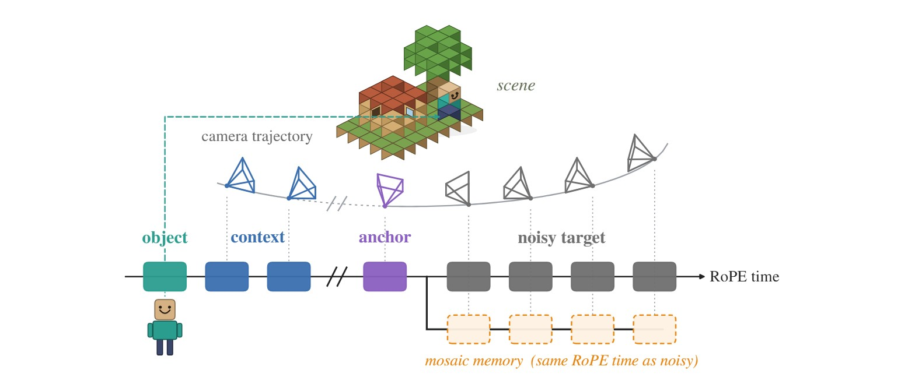
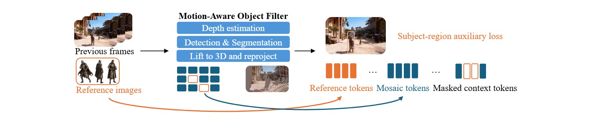
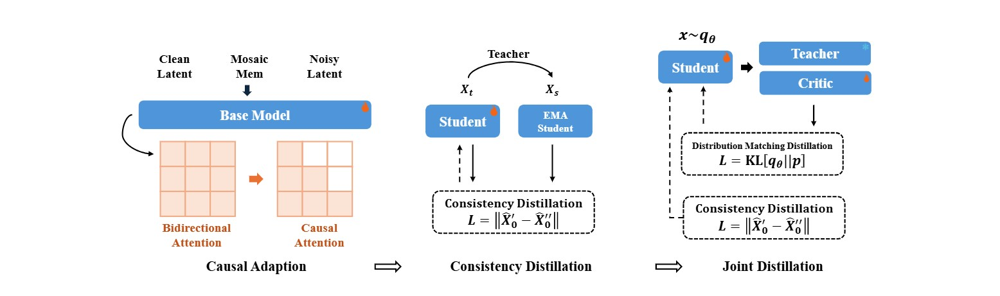
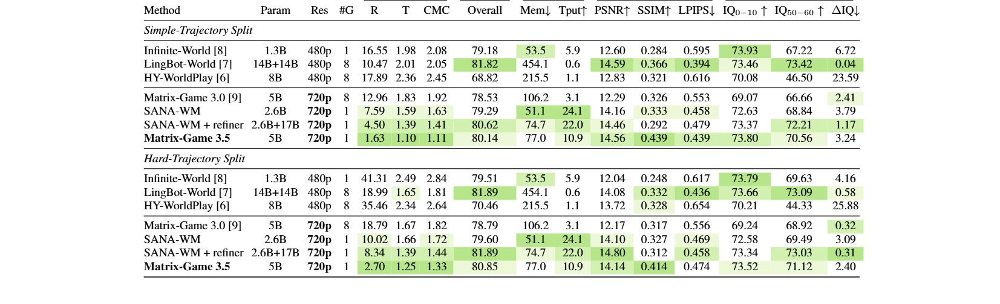

Enhancing Real-Time Streaming Interactive World Models with Patch Memory
Riemann Dynamics
*Equal contribution. †Project lead. ‡Corresponding author.
Overview
Matrix-Game 3.5 extends Matrix-Game 3.0 toward geometry-aware, long-horizon interactive world generation. The model organizes anchor frames, clean context frames, retrieved memory patches, dynamic-subject references, and noisy target frames into a single pose-aware token sequence, so camera control and memory conditioning are handled by the same self-attention stack. For camera control, we adapt PRoPE to video generation by overlaying world-to-image projection geometry onto the existing spatiotemporal RoPE channels, adding no learnable parameters while preserving RoPE's relative temporal structure. For long-term scene memory, Mosaic Memory replaces frame-level recall with patch-level memory: historical latent patches are lifted into metric 3D, reprojected to target views, selected with visibility-aware fusion, and injected as target-aligned spatial conditioning. The memory system further separates static scene recall from dynamic-subject consistency through a motion-aware object filter, static Mosaic Memory, compact reference tokens, context masking, and an auxiliary subject loss. To provide the required supervision, we build an offline annotation and curation pipeline that estimates metric depth, camera poses, and intrinsics; generates window-level prompts for static scenes and dynamic objects; extracts object tracks and reference images; and filters clips with multi-metric scene-quality criteria. Together, these components enable long-horizon camera-controllable generation that recalls stable scene structure while preserving prompt-driven dynamic content.
How it works
Matrix-Game 3.5 extends Matrix-Game 3.0 toward geometry-aware, long-horizon interactive world generation, organizing all conditions into a single pose-aware token sequence so that camera control and memory are handled by the same self-attention stack — through PRoPE-based camera control and patch-level Mosaic Memory.
We build on PRoPE, which turns camera geometry into a relative position code: each latent frame is associated with a full world-to-image projection matrix P = lift(K)·W. Unlike native PRoPE, which allocates a separate subspace for the camera, our layout tiles the camera projection across all head channels, on top of the full spatiotemporal RoPE including its frame axis. After the standard RoPE rotation, queries are multiplied by P and keys and values by P⁻¹, so a single softmax carries both the relative time t = i − j and the relative pose, adding no learnable parameters.
For stability in low-precision training, all camera poses are recentered to the first target frame of the generation window, with a direction-preserving logarithmic compression applied only to the metric-scale translation.

Existing memory falls into explicit methods, which reconstruct scenes with geometric primitives, and implicit methods, which store entire frames or latent features and rely on the network to learn cross-view correspondence. Mosaic Memory adopts an intermediate granularity, storing localized image patches as the fundamental unit of memory. For every latent patch in the target frame, the corresponding memory is retrieved directly from camera geometry: historical patches are back-projected into metric 3D using depth, intrinsics, and camera pose, then reprojected into the target view.
When multiple historical patches project onto the same target location, a z-buffer selection retains only the surface closest to the target camera; regions that are occluded, unreliable, or never observed are left empty for the diffusion model to synthesize. Within the pose-aware sequence, each retrieved patch takes the RoPE timestamp of the target frame it supports and the spatial coordinate at which its content lands in the target view (Figure 2).

To preserve both scene-level stability and object-level consistency, the memory system decouples static and dynamic content. A motion-aware object filter retains only static regions in Mosaic Memory and masks moving ones before fusion, while the dynamic subject is represented by sequence-level reference tokens encoded from a few reference images and reinforced by a subject-region auxiliary loss — preserving identity while avoiding ghosting and duplication.

To turn the bidirectional video DiT into a real-time interactive world model, we reformulate generation as chunk-wise autoregressive causal generation: each chunk attends only to past chunks through a causal mask and to the mosaic memory available before it, preventing future-information leakage.
We adopt a three-stage pipeline — causal adaptation, consistency distillation, and joint distillation. The first two stages use ground-truth history under teacher forcing to adapt the base model to causal attention and compress it into a few-step generator; joint distillation then combines a Distribution Matching Distillation (DMD) objective on autoregressive rollouts with the consistency objective, yielding stable few-step generation over long horizons.

Results
On our one-minute benchmark, Matrix-Game 3.5 achieves the best camera accuracy across all pose metrics and both trajectory splits, while matching the strongest baselines on visual quality and revisit consistency at 720p.

Visualization
Long-horizon interactive rollouts under first- and third-person camera control. Drag horizontally to browse.
We would like to express our gratitude to:
We are grateful to the broader research community for their open exploration and contributions to the field of interactive world generation.
@article{xxx2026matrix,
title={Matrix-Game 3.5: Enhancing Real-Time Streaming Interactive World Models with Patch Memory},
author={XXX},
journal={arXiv preprint arXiv:2604.08995},
year={2026}
}